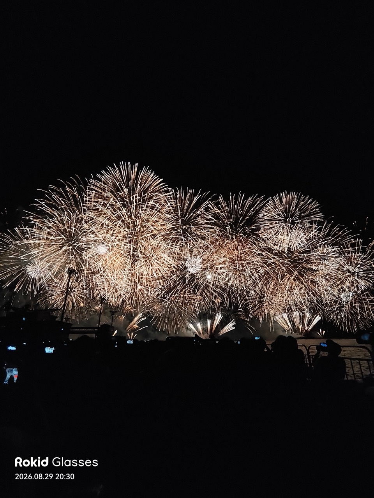

花火大会当日にRokidアプリを作ってみた
Rokid Glasses単体で花火を検出し、オタクくんとギャルがリアルタイムに解説するアプリを作った記録。
登壇イベント：Smart Glasses Vibeathon Kagoshima 2026｜XR Meetup Kagoshima 3周年記念イベント
2026年9月6日（日）
あぶち（@abricheese）の登壇資料とデモ

Rokid Glasses単体で花火を検出し、オタクくんとギャルがリアルタイムに解説するアプリを作った記録。
登壇イベント：Smart Glasses Vibeathon Kagoshima 2026｜XR Meetup Kagoshima 3周年記念イベント
2026年9月6日（日）